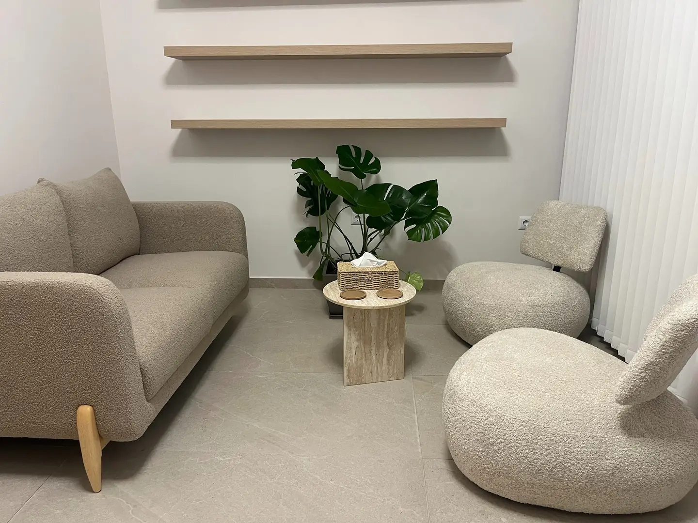

Επικοινωνία
Καλείτε στο 694 630 1835 ή κλείνετε ραντεβού online. Μου λέτε με δυο λόγια τι σας απασχολεί και βρίσκουμε μια ώρα που σας εξυπηρετεί.
Ατομικές συνεδρίες, θεραπεία ζεύγους και οικογένειας με την Αικατερίνη Φόλλα — σε έναν ήσυχο, φιλόξενο χώρο στη Θεσσαλονίκη ή online.

Σπάνια κάποιος έρχεται για ένα μόνο θέμα. Αυτά είναι όσα φέρνουν συχνότερα ενήλικες, ζευγάρια, οικογένειες και εφήβους στη θεραπεία.
Όταν η ανησυχία δεν σταματά, το σώμα είναι συνέχεια σε εγρήγορση ή ο πανικός έρχεται από το πουθενά. Εξετάζουμε τι τον τροφοδοτεί και πώς θα ξαναβρείτε σταθερό έδαφος.
Κόπωση, απώλεια ενδιαφέροντος, ένα αίσθημα κενού που δεν φεύγει. Η θεραπεία προσφέρει ένα σταθερό σημείο για να κατανοήσετε τι συμβαίνει και να προχωρήσετε βήμα βήμα.
Καβγάδες που επαναλαμβάνονται, απόσταση, ζήλια, κρίση εμπιστοσύνης ή ένας χωρισμός. Κοιτάμε το μοτίβο ανάμεσά σας, όχι ποιος φταίει.
Εντάσεις στο σπίτι, ένα παιδί που δυσκολεύεται, όρια που δεν τηρούνται, μεγάλες αλλαγές στην οικογένεια. Στήριξη για τους γονείς και για όλη την οικογένεια.
Η απώλεια ενός αγαπημένου προσώπου, μια επώδυνη εμπειρία, μια μετακόμιση, ένας νέος ρόλος. Στιγμές που όσα ξέραμε αλλάζουν και χρειαζόμαστε χώρο για να τα επεξεργαστούμε.
Δυσκολίες στη σεξουαλική ζωή, ερωτήματα σεξουαλικού προσανατολισμού ή ταυτότητας φύλου. Ένας χώρος χωρίς κριτική, για άτομα και ζευγάρια — φιλικός προς την ΛΟΑΤΚΙ+ κοινότητα.
Όταν το διαδίκτυο, ο τζόγος ή οι ουσίες καταλαμβάνουν όλο και περισσότερο χώρο στην καθημερινότητα. Εξετάζουμε τι σας προσφέρουν και τι σας κοστίζουν.
Δεν χρειάζεται να υπάρχει «πρόβλημα» για να ξεκινήσει κανείς θεραπεία. Μερικές φορές θέλουμε απλώς να γνωρίσουμε καλύτερα τον εαυτό μας και να σχετιζόμαστε διαφορετικά.
Η συστημική θεραπεία βλέπει τον άνθρωπο μέσα στις σχέσεις του. Επιλέξτε για ποιον αναζητάτε στήριξη και δείτε πώς θα δουλέψουμε.
Η συστημική ματιά ξεκινά από μια απλή ιδέα: κανείς δεν υπάρχει μόνος του. Γι’ αυτό στη δουλειά μας κοιτάμε όχι μόνο τι σας συμβαίνει, αλλά και πώς αυτό συνδέεται με τις σχέσεις και τον κόσμο σας.
Είμαι ψυχολόγος, με πτυχίο BSc Psychology από το CITY College, International Faculty of the University of Sheffield (2021), και άδεια ασκήσεως επαγγέλματος ψυχολόγου. Εκπαιδεύομαι στη συστημική ψυχοθεραπεία στο Κέντρο Συστημικής Μελέτης και Θεραπείας Θεσσαλονίκης και έχω ολοκληρώσει εκπαίδευση στη συστημική σεξολογία και τη σεξοθεραπεία.
Δουλεύω με ενήλικες, εφήβους, ζευγάρια και οικογένειες, ατομικά και σε ομάδες, τόσο σε Κέντρο Ψυχικής Υγείας όσο και στο ιδιωτικό μου γραφείο στη Σταυρούπολη. Στο παρελθόν προσέφερα εθελοντική εργασία στο Κέντρο Ολιστικής Φροντίδας «ΝΕΜΕΣΙΣ» και στα Παιδικά Χωριά SOS Πλαγιαρίου.
Το γραφείο είναι ένας ήσυχος, φιλόξενος χώρος, όπου μπορείτε να μιλήσετε ελεύθερα — χωρίς βιασύνη και χωρίς κριτική.
Καλείτε στο 694 630 1835 ή κλείνετε ραντεβού online. Μου λέτε με δυο λόγια τι σας απασχολεί και βρίσκουμε μια ώρα που σας εξυπηρετεί.
Γνωριζόμαστε και μιλάμε για ό,τι σας φέρνει και για όσα θα θέλατε να αλλάξουν. Είναι και μια ευκαιρία να δείτε αν νιώθετε άνετα να συνεχίσουμε μαζί.
Ορίζουμε μαζί τη συχνότητα των συνεδριών και τους στόχους, τους οποίους επανεξετάζουμε στην πορεία. Μπορείτε να συνεχίσετε δια ζώσης ή online.
Εξαιρετική επαγγελματίας, με ανθρωπιά, κατανόηση και πραγματικό ενδιαφέρον. Από την πρώτη στιγμή ένιωσα ασφάλεια και εμπιστοσύνη, χωρίς καμία κριτική. Η προσέγγισή της είναι ουσιαστική και με έχει βοηθήσει να κατανοήσω καλύτερα τον εαυτό μου και να διαχειρίζομαι πιο αποτελεσματικά όσα με απασχολούν. Τη συστήνω ανεπιφύλακτα!
Όσα ρωτούν συνήθως όσοι σκέφτονται να ξεκινήσουν.
Δεν βρίσκετε την ερώτησή σας; Τηλεφωνήστε — συχνά αρκεί μια σύντομη κουβέντα.
694 630 1835Είναι μια προσέγγιση που βλέπει τον άνθρωπο μέσα στις σχέσεις του: στην οικογένεια, στο ζευγάρι, στη δουλειά, στην κοινότητα. Αντί να αναζητά ποιος φταίει, εξετάζει τα μοτίβα επικοινωνίας και συμπεριφοράς που συντηρούν μια δυσκολία και αναζητά νέους, πιο λειτουργικούς τρόπους σχέσης. Εφαρμόζεται σε άτομα, ζευγάρια, οικογένειες και ομάδες.
Όχι απαραίτητα. Η συστημική ματιά εφαρμόζεται και στην ατομική θεραπεία: ακόμη κι αν έρχεστε μόνοι, δουλεύουμε με τις σχέσεις σας. Αν κάποια στιγμή φανεί χρήσιμο να συμμετάσχει κι άλλο πρόσωπο, το συζητάμε και το αποφασίζουμε μαζί.
Οι ατομικές συνεδρίες, οι συνεδρίες ζεύγους και οικογένειας διαρκούν 60 λεπτά, ενώ οι συναντήσεις των ομάδων 90 λεπτά. Η συχνότητα και η συνολική διάρκεια της θεραπείας εξαρτώνται από όσα σας φέρνουν και από τους στόχους σας, και τις ορίζουμε μαζί από την αρχή.
Ναι. Οι συνεδρίες μπορούν να γίνουν και online, με βιντεοκλήση, κάτι που διευκολύνει όσους μένουν μακριά, ταξιδεύουν ή έχουν απαιτητικό πρόγραμμα. Χρειάζεστε μόνο έναν ήσυχο χώρο, καλή σύνδεση στο διαδίκτυο και κάμερα.
Ναι. Όσα λέγονται στη συνεδρία καλύπτονται από το επαγγελματικό απόρρητο και τον κώδικα δεοντολογίας των ψυχολόγων. Δεν κοινοποιούνται σε τρίτους χωρίς τη συγκατάθεσή σας, με εξαίρεση τις περιπτώσεις που ορίζει ο νόμος για την προστασία της ζωής.
Ναι. Υπάρχουν ατομικές συνεδρίες για εφήβους και ομάδα για τη διαχείριση του άγχους των εξετάσεων. Με τη σύμφωνη γνώμη του εφήβου, οι γονείς μπορούν να συμμετέχουν σε κοινές συναντήσεις, ενώ προσφέρεται και ξεχωριστή συμβουλευτική γονέων.
Ναι, υπάρχει ειδική τιμή για φοιτητές και ανέργους. Για τις τιμές των συνεδριών και για οτιδήποτε άλλο θέλετε να ρωτήσετε, μπορείτε να τηλεφωνήσετε στο 694 630 1835.
Μπορείτε να τηλεφωνήσετε στο 694 630 1835 ή να κλείσετε ραντεβού online. Η ακύρωση είναι δωρεάν, αρκεί να γίνει τουλάχιστον 24 ώρες πριν από την ώρα της συνεδρίας.
Στη Γεωργίου Σεφέρη 1, στη Σταυρούπολη Θεσσαλονίκης, στην πολυκατοικία με το κατάστημα της Τράπεζας Πειραιώς στο ισόγειο. Υπάρχουν στάσεις του ΟΑΣΘ σε απόσταση 200–350 μέτρων και δημόσιος δωρεάν χώρος στάθμευσης περίπου 200 μέτρα από το γραφείο.
Στο ισόγειο της πολυκατοικίας βρίσκεται κατάστημα της Τράπεζας Πειραιώς και στην πρόσοψη η πινακίδα «ΨΥΧΟΛΟΓΟΣ». Στάσεις του ΟΑΣΘ υπάρχουν σε απόσταση 200–350 μέτρων και δημόσιος δωρεάν χώρος στάθμευσης περίπου 200 μέτρα από το γραφείο.
Συνεδρίες μόνο κατόπιν ραντεβού, δια ζώσης ή online. Τηλεφωνήστε για να βρούμε μια ώρα που σας εξυπηρετεί.
694 630 1835Καλέστε με απευθείας ή κλείστε ραντεβού online. Οι συνεδρίες γίνονται δια ζώσης στη Σταυρούπολη ή online, με βιντεοκλήση.
694 630 1835Δωρεάν ακύρωση έως 24 ώρες πριν από το ραντεβού.